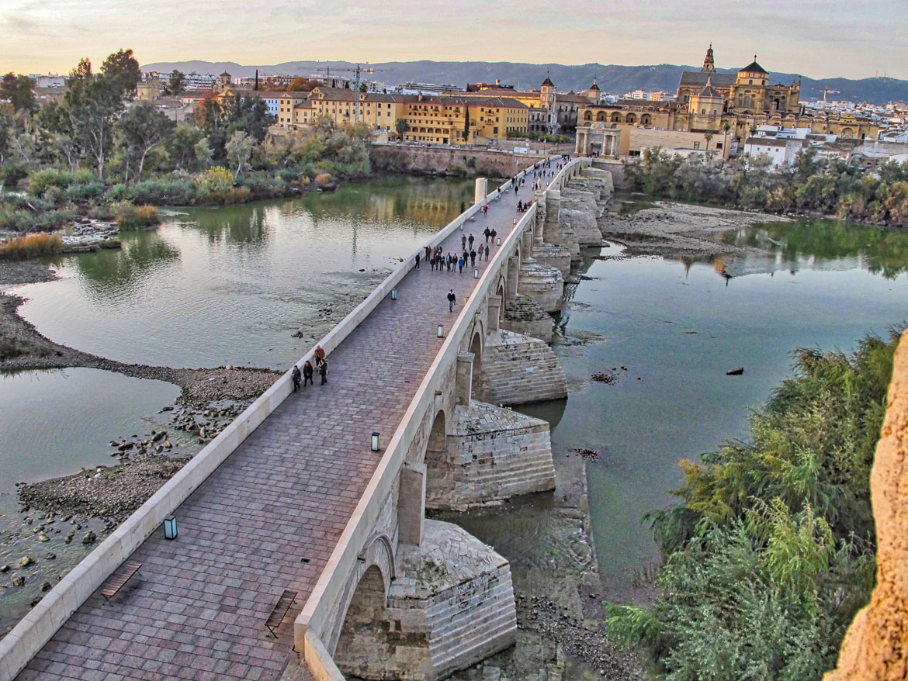

CÓRDOBA
Sobre nuestra ciudad Córdoba. Córdoba es una ciudad con un ingente legado cultural y monumental. Su situación estratégica, cercana al río Guadalquivir, antaño navegable, y la herencia de los distintos pueblos asentados en sus ricas tierras, la han convertido en un lugar privilegiado.La Unesco (Organización Cultural, Científica y Educacional de Naciones Unidas) reconoció en 1994 la importancia universal de los bienes históricos cordobeses, ampliando el título de Patrimonio de la Humanidad no sólo a la Mezquita-Catedral, sino también a todo el conjunto urbano que la rodea. Además, en 2012, Córdoba recibió otro distintivo más: La Fiesta de Los Patios fue reconocida como Patrimonio Cultural Inmaterial de la Humanidad. Por último, en julio de 2018, la Ciudad Califal de Medina Azahara también ha recibido el título de Patrimonio de la Humanidad.
